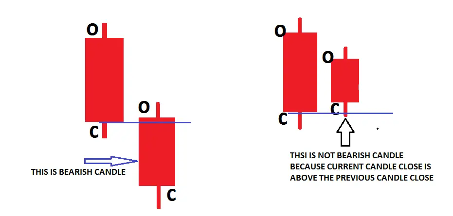

ট্রেডিংয়ে ক্যান্ডেলস্টিক অধ্যয়ন করার উপায়
এই প্রবন্ধে, আমি ট্রেডিংয়ে ক্যান্ডেলস্টিক অধ্যয়ন করার উপায় নিয়ে আলোচনা করবো। এই প্রবন্ধের অংশ হিসাবে, আমরা ট্রেডিংয়ে ক্যান্ডেলস্টিক সম্পর্কিত নিম্নলিখিত তিনটি গুরুত্বপূর্ণ পয়েন্ট বিস্তারিতভাবে আলোচনা করবো।
ক্যান্ডেলস্টিক কী?
ক্যান্ডেলস্টিকগুলি ক্রেতা ও বিক্রেতারা কী করছে তার প্রতিফলন। তারা কতটা মূল্য পরিবর্তন করে এবং এই পরিবর্তনের পেছনের শক্তি কতটা তা দেখায়। ক্যান্ডেল আপনাকে কে নিয়ন্ত্রণ করছে তা বলে, কিন্তু এই পরিবর্তনের পেছনের ক্রেতা বা বিক্রেতাদের শক্তি সম্পর্কে বলে না; ভলিউম সহ ক্যান্ডেল সেটি দেখায়।

ওপেন:
ওপেন মূল্য আমাদের জানান দেয় সেই সময়ের ওপেনিং-এ ক্রেতা ও বিক্রেতার মধ্যে ভারসাম্য।
ওপেনিং মূল্য দিনটির প্রথম লেনদেন। ট্রেডাররা রাতারাতি বাজার পর্যালোচনা করার পর,
ওপেনটি দিনটি শুরু করার জন্য বিনিয়োগকারীদের কাঙ্ক্ষিত অবস্থান উপস্থাপন করে।
পূর্ববর্তী ক্লোজ থেকে ওপেনে পরিবর্তন নতুন অনুভূতি প্রকাশ করে। এছাড়াও, সংস্থাগুলি
বেশিরভাগ সময় বড়, সর্বাধিক তরল লেনদেন হওয়ায় শেয়ারের সংখ্যা সংগ্রহ (বা বিতরণ) করতে
চাইলে প্রায়ই ওপেনে অর্ডার দেয়। এভাবে, ওপেনিংটি সম্ভবত বড় স্টক পরিমাণ সংগ্রহ/ বিতরণ করার
মধ্যে অন্যতম সেরা সময় হতে পারে যাতে স্টকের মূল্যে প্রভাব কমানোর প্রচেষ্টা করাও সম্ভব।
হাই:
হাই হল সেশন চলাকালীন স্টক যে সর্বোচ্চ পয়েন্টে লেনদেন হয়েছে। হাই হল সেই সর্বাধিক পয়েন্ট যেখানে ষাঁড়গুলি স্টককে উত্তোলন করতে পেরেছে যতক্ষণ না বিক্রেতারা নিয়ন্ত্রণ পুনরুদ্ধার করে স্টককে নীচে ঠেলে দেয়। হাই বিক্রেতাদের জন্য একটি শক্ত স্থল এবং ক্রেতাদের জন্য একটি প্রতিরোধ এলাকা নির্দেশ করে। একটি ব্যতিক্রম আছে: যখন স্টক হাই-এ বন্ধ হয়, এটি বিক্রেতাদের থেকে কোনও প্রকৃত প্রতিরোধের সম্মুখীন হয় না। ক্রেতারা শুধুমাত্র সময় শেষ হয়ে গিয়েছিল।
লো:
লো হল সেশন চলাকালীন স্টক যে সর্বনিম্ন পয়েন্টে লেনদেন হয়েছে। লো হল সেই সর্বাধিক পয়েন্ট যেখানে ভাল্লুকগুলি স্টককে নীচে ঠেলে দিয়েছে যতক্ষণ না ক্রেতারা নিয়ন্ত্রণ পুনরুদ্ধার করে স্টককে উপরে ঠেলে দেয়। লো এমন একটি এলাকা যেখানে মূল্য কমানো থেকে রোধ করতে যথেষ্ট চাহিদা বিদ্যমান। ব্যতিক্রম হল যখন সুরক্ষা লো-তে বন্ধ হয়। যখন স্টক লো-তে বন্ধ হয়ে যায়, তখন এটি কোনও ক্রয় সমর্থন পায়নি। বরং, ষাঁড়গুলি সেশন এর সমাপ্তি ঘণ্টা দ্বারা বাঁচানো হয়েছিল।
সমাপ্তি:
সমাপ্তি মূল্য আমাদের বলে যে একটি নির্দিষ্ট সময়ের শেষে ভারসাম্য বিন্দু কোথায় ছিল। সমাপ্তি হল সর্বশেষ মূল্য যা ক্রেতা এবং বিক্রেতার মধ্যে সম্মত হয়েছে, এবং এটি ট্রেডিং সেশন শেষ করে। সমাপ্তি বাজারের চূড়ান্ত মূল্যায়ন। একটি সমাপ্তি এবং পরবর্তী সমাপ্তির মধ্যে অনেক কিছু ঘটতে পারে। সমাপ্তি দিনের শেষে বিনিয়োগকারীদের অনুভূতি এবং আস্থার প্রতিনিধিত্ব করে। এটি এমন একটি অবস্থান যা বিনিয়োগকারীরা দিনের শেষে ধরে রাখতে চান যখন পরবর্তী সেশন খোলা না হওয়া পর্যন্ত তারা তারল্যের সাথে বাণিজ্য করতে পারেন না। সমাপ্তি মূল্য হল প্রথম (প্রায়শই একমাত্র) মূল্য যা বেশিরভাগ বিনিয়োগকারী জানতে চান।
পরিবর্তন:
পরিবর্তন হল সমাপ্তি এবং সমাপ্তির মধ্যে পার্থক্য। এক দিনের সমাপ্তি মূল্য এবং পরবর্তী দিনের সমাপ্তি মূল্যের মধ্যে পার্থক্য। যখন এই পার্থক্য ইতিবাচক হয়, এটি আমাদের বলে যে চাহিদা সরবরাহকে ছাড়িয়ে গেছে। যখন এই পার্থক্য নেতিবাচক হয়, এটি আমাদের বলে যে সরবরাহ চাহিদার চেয়ে বৃদ্ধি পাচ্ছে। পরিবর্তন সম্ভবত সবচেয়ে বেশি অনুসন্ধান করা আর্থিক তথ্য।
পরিসীমা:
পরিসীমা হল সেই মানের সূচি যার মধ্যে সারা দিন স্টক বাণিজ্য করে।
পরিসীমা বারের সবচেয়ে উঁচু পয়েন্ট এবং একই বারের সবচেয়ে নিচু পয়েন্টের মধ্যে বিস্তৃত। এটি বারের শীর্ষ থেকে মাপা হয়, যেখানে প্রতিরোধ কম এবং সমর্থন আসে। পরিসীমার আকার আমাদের গুরুত্বপূর্ণ তথ্য দেয় যে কীভাবে সহজে চাহিদা স্টকের দাম বাড়াতে পারে বা সরবরাহ দাম কমাতে বাধ্য করে। যত বেশি পরিসীমা, তত সহজে সরবরাহ ও চাহিদার শক্তি স্টকের দাম সরাতে পারে।
বুলিশ ক্যান্ডেলস্টিক
এটি কিছুই নয়, কেবল তখনই বর্তমান ক্যান্ডেল বন্ধ হয়, এটি আগের ক্যান্ডেলের ক্লোজের উপরে থাকে।
বেয়ারিশ ক্যান্ডেলস্টিক
যখন বর্তমান ক্লোজ আগের ক্যান্ডেলের ক্লোজের নিচে থাকে

ক্যান্ডেলস্টিকের সঠিক বোঝাপড়া থাকলে, আপনি কাছাকাছি ভবিষ্যতে কী ঘটতে যাচ্ছে তা পূর্বানুমান করতে পারেন
#প্রো টিপস: আমরা (বিপণনকারী) বাজারকে সরাতে পারি না, তাই প্রতিটি ক্যান্ডেল দেখায় কী বুদ্ধিমান টাকা দেখাতে চেষ্টা করছে। সুতরাং তাদের পদক্ষেপ ফাঁদ বা প্রকৃত কিনা তা শুধুমাত্র ভলিউম দ্বারা যাচাই হয়
#প্রো টিপস: ক্যান্ডেলস্টিক অর্ধেক তথ্য দেখায়, এবং অন্য অর্ধেক তথ্য ভলিউম দ্বারা প্রদর্শিত হয়
উদাহরণ
আমাদের কী বলছে?
SENIMATE = বুলিশ, ২টি ধারাবাহিক উচ্চতর ক্লোজ ক্যান্ডেল। চলেন এই ক্যান্ডেলে ভলিউম যোগ করি
২য় ক্যান্ডেলের সীমা ১ম ক্যান্ডেলের চেয়ে ছোট
২য় ক্যান্ডেলের ভলিউম ১ম ক্যান্ডেলের চেয়ে বেশি
ভাবুন কেন ভলিউম ১ম ক্যান্ডেলের চেয়ে বেশি।
আমি আপনাকে ব্যাখ্যা করি।
উচ্চ ভলিউম সহ সংকীর্ণ বিস্তার ক্যান্ডেল। দুটি সম্ভাব্য ব্যাখ্যা
যদি ভলিউম ক্রয়কে প্রতিনিধিত্ব করত, তাহলে বিস্তার কীভাবে সংকীর্ণ হতে পারে?
- অথবা পেশাদার অর্থ ক্রয়ে বিক্রি করছে, নিকট ভবিষ্যতে সম্ভাব্য উল্টোদিকে
- বামে একটি ট্রেডিং রেঞ্জ রয়েছে, এবং পেশাদার অর্থ এই পুরানো ট্রেডিং রেঞ্জে লক হওয়া ট্রেডারদের বিক্রয় গ্রহণের জন্য প্রস্তুত। আমি বলতে চাইছি, ব্রেক আউট হতে পারে।
চলেন চার্টটি বুঝি।
যদি পরবর্তী বারটি নিচে যায় এবং এর নিম্নস্থানে বন্ধ হয়, এটি প্রফেশনাল বিক্রি নিশ্চিত করে

কম ভলিউম নিচে ক্যান্ডেল মাঝামাঝি বা শীর্ষে বন্ধ হওয়া দেখায় স্মার্ট মানি সরবরাহ পরীক্ষা করছে এবং আর কোন সরবরাহ উপলব্ধ নেই ২য় ক্যান্ডেল ছিল ক্রেতার ভলিউম যদি পরবর্তী ক্যান্ডেল বর্তমান ক্যান্ডেলের উপরে বন্ধ হয়
ট্রেডিং এ ক্যান্ডেলস্টিক বিশ্লেষণের জন্য ৬টি বৈশিষ্ট্য
- প্রথম নীতি: যেকোনো উইকের দৈর্ঘ্য, যা মোমবাতির উপরের বা নিচের দিকে থাকে, সর্বদাই প্রথম ফোকাস হতে হবে কারণ এটি তাৎক্ষণিকভাবে শক্তি, দুর্বলতা এবং অনিশ্চয়তা দেখায়, এবং সর্বোপরি, যেখানে স্মার্ট-মানি প্রবেশ করে তা নির্দেশ করে।
- দ্বিতীয় নীতি: যদি কোনো উইক তৈরি না হয়, এটি বাজারের সমাপ্তি মূল্য সম্পর্কে শক্তিশালী মনোভাব নির্দেশ করে। সেখানে স্মার্ট-মানি সক্রিয় থাকে।
- তৃতীয় নীতি: একটি চওড়া শরীর শক্তিশালী বাজারমুখী মনোভাব নির্দেশ করে, এবং একটি সরু শরীর দুর্বল বাজারমুখী মনোভাব প্রকাশ করে। একটি সরু শরীর এবং ভারী ভলিউম হয় স্মার্ট মানি ক্রমাগত গতির জন্য পর্যবেক্ষণ করে বা বিপরীত দিকে স্মার্ট মানি প্রবেশ করে।
- নিয়ম চার: একই ধরনের মোমবাতি মূল্য প্রবণতার কোথায় দেখা যাচ্ছে তার উপর ভিত্তি করে সম্পূর্ণ ভিন্ন অর্থ বহন করবে। প্রবণতার শুরুতে, মাঝামাঝি বা শেষে, সমর্থন বা প্রতিরোধস্থলে, অথবা সংহতি পর্যায়ে। মোমবাতি বিশ্লেষণ করা উচিত চালনার প্রেক্ষাপটে। কখনই বিচ্ছিন্নভাবে এক দিনের ক্রিয়াকলাপ দেখে বাজার জানা চেষ্টা করবেন না। ধাপে ধাপে বাজার পড়ুন এবং এরপর সাম্প্রতিক দিনের ক্রিয়াকলাপ সেই ধাপে বিবেচনা করুন।
- নিয়ম পাঁচ: ভলিউম মূল্যের সত্যতা নিশ্চিত করে। প্রথমে দেখুন মোমবাতি কি বলছে, তারপর ভলিউম দ্বারা নিশ্চিত করুন। এটি কি মোমবাতির মূল্য প্রবণতার সাথে নিশ্চিত করছে কিনা?
- নিয়ম ছয়: যখন একটি নির্দিষ্ট সময়সীমার কোন মানে দাঁড়ায় না, তখন বৃহত্তর ছবি বা চালনার মাইক্রোস্ট্রাকচারের জন্য পরবর্তী উচ্চতর সময়সীমায় যান অথবা নিম্নতর সময়সীমায় যান।
ট্রেডিং সারসংক্ষেপে ক্যান্ডেলস্টিক অধ্যয়ন করার পদ্ধতি:
ক্যান্ডেলস্টিক প্যাটার্ন অধ্যয়ন করা একটি গুরুত্বপূর্ণ দক্ষতা যা প্রযুক্তিগত বিশ্লেষণে বাজারের অনুভূতি এবং সম্ভাব্য মূল্য পরিবর্তন সম্পর্কে ধারণা দিতে পারে। ক্যান্ডেলস্টিক প্যাটার্ন পড়া এবং ব্যাখ্যা করার শিক্ষার জন্য এখানে পদক্ষেপ-বাই-পদক্ষেপ পদ্ধতি দেওয়া হল:
১. মৌলিক বিষয়গুলি বুঝুন
- ক্যান্ডেলস্টিকের গঠন: প্রতিটি ক্যান্ডেলস্টিক সাধারণত এক দিনের ট্রেডিং প্রতিনিধিত্ব করে এবং একটি বডি ও উইকস (বা শেডো) নিয়ে গঠিত হয়। বডি খোলা এবং বন্ধ মূল্যের প্রদর্শন করে, যখন উইকস উচ্চ এবং নিম্ন মূল্য প্রদর্শন করে।
- রঙ কোডিং: ক্যান্ডেলস্টিক সাধারণত মূল্যের পরিবর্তন প্রতিফলিত করতে রঙিন হয়। একটি সাধারণ স্কিম হল খোলার মূল্য থেকে কম বন্ধ মূল্যের জন্য লাল (বিয়ারিশ) এবং খোলার মূল্য থেকে বেশি বন্ধ মূল্যের জন্য সবুজ (বুলিশ)।
২. একক ক্যান্ডেলস্টিক প্যাটার্ন শিখুন
- দোজি: উদ্বোধনী ও সমাপনী মূল্য প্রায় সমান হলে সিদ্ধান্তহীনতা নির্দেশ করে।
- হ্যামার এবং হ্যাংগিং ম্যান: ছোট বডি এবং লম্বা নিম্ন উইক, যা সম্ভাব্য বিপরীতমুখী সংকেত প্রদান করে।
- ইনভার্টেড হ্যামার এবং শুটিং স্টার: ছোট বডি এবং লম্বা ঊর্ধ্ব উইক, যা বিপরীত দিকে সম্ভাব্য বিপরীতমুখী সংকেত প্রদান করে।
৩. বহুক্যান্ডেলস্টিক প্যাটার্ন অন্বেষণ করুন
- বুলিশ ইনগালফিং: একটি ছোট বিয়ারিশ ক্যান্ডলের পরে একটি বড় বুলিশ ক্যান্ডল যা পূর্বের ক্যান্ডলকে 'ইনগালফ' করে, যা সম্ভাব্য উর্ধ্বমুখী পরিবর্তনের সূচনা নির্দেশ করে।
- বেয়ারিশ ইনগালফিং: বুলিশ ইনগালফিং-এর বিপরীত, যা সম্ভাব্য নিম্নমুখী পরিবর্তন নির্দেশ করে।
- মর্নিং স্টার এবং ইভনিং স্টার: একটি তিন-ক্যান্ডলের প্যাটার্ন যা বর্তমান প্রবণতাকে উল্টে দেয়।
- থ্রি হোয়াইট সোলজারস এবং থ্রি ব্ল্যাক ক্রোস: একই রঙের একাধিক ধারাবাহিক দীর্ঘ শরীরের ক্যান্ডল, যা সেই রঙের দিকে শক্তিশালী গতিবেগ নির্দেশ করে।
৪. প্রসঙ্গ অধ্যয়ন করুন
- ক্যান্ডলস্টিক প্যাটার্নসমূহ একক অবস্থানে সংঘটিত হয় না; এদের গুরুত্ব বৃদ্ধি পায় যখন তারা গুরুত্বপূর্ণ সহায়তা বা প্রতিরোধ স্তর, ট্রেন্ড লাইন, বা ফিবোনাচ্চি রিট্রেসমেন্ট স্তরে প্রদর্শিত হয়।
- ভলিউমও গুরুত্বপূর্ণ—যে প্যাটার্নগুলি উচ্চতর ভলিউম রিডিং দ্বারা নিশ্চিত হয় তারা বেশি নির্ভরযোগ্য।
৫. প্যাটার্ন স্বীকৃতির অনুশীলন করুন
- ক্যান্ডলস্টিক প্যাটার্নগুলি স্বীকৃতি দিতে অনুশীলন করার জন্য ঐতিহাসিক চার্টগুলির ব্যবহার করুন। বেশিরভাগ ট্রেডিং প্ল্যাটফর্ম এই কাজে সহায়ক টুল সরবরাহ করে।
- কিছু ব্যবসায়ী ফ্ল্যাশকার্ড বা প্যাটার্ন স্বীকৃতি সংক্রান্ত অনুশীলনের জন্য ডিজাইন করা অ্যাপ ব্যবহারকে সহায়ক মনে করেন।
৬. ব্যাক-টেস্টিং
- একবার আপনি প্যাটার্নগুলির সাথে পরিচিত হয়ে গেলে, সেগুলি ব্যাক-টেস্ট করুন। ঐতিহাসিক ডেটা দেখুন যে প্যাটার্নগুলি দেখা দেওয়ার পরে স্টকের দাম কীভাবে পরিবর্তিত হয়েছে।
- প্রতিটি প্যাটার্নের সাফল্যের হার এবং কোন বাজার পরিস্থিতিতে সেগুলি সবচেয়ে বেশি নির্ভরযোগ্য তা বুঝুন।
৭. একটি সিমুলেটর দিয়ে শুরু করুন
- রিয়েল টাকার ঝুঁকি না নিয়ে ক্যান্ডেলস্টিক প্যাটার্নগুলির সাথে ট্রেডিং অনুশীলন করার জন্য একটি ট্রেডিং সিমুলেটর ব্যবহার করুন।
- এটি আপনাকে বাস্তব সময়ের বাজার পরিস্থিতিতে এই প্যাটার্নগুলি কীভাবে কাজ করে তা বুঝতে সাহায্য করতে পারে।
৮. অন্যান্য বিশ্লেষণ প্রণালী সংযুক্ত করুন
- সংকেত নিশ্চিত করতে ক্যান্ডেলস্টিক প্যাটার্নকে অন্যান্য টেকনিক্যাল বিশ্লেষণ সরঞ্জাম, যেমন ইন্ডিকেটর এবং অস্কিলেটরের সাথে মিলিয়ে নিন।
- কোনও প্যাটার্নই নির্ভুল নয়। ক্যান্ডেলস্টিককে অন্যান্য বিশ্লেষণ স্ট্রাটেজিের সাথে মিলিয়ে নেওয়া আপনার ট্রেডকে নিশ্চিত করতে সাহায্য করতে পারে।
৯. শেখা চালিয়ে যান
- ক্যান্ডেলস্টিক প্যাটার্নগুলি টেকনিক্যাল বিশ্লেষণের একটি অংশ মাত্র। চার্ট প্যাটার্ন, টেকনিক্যাল ইন্ডিকেটর এবং ওয়েভ থিওরি সম্পর্কে আপনার জ্ঞান বাড়ান।
- টেকনিক্যাল বিশ্লেষণের যেকোনো নতুন গবেষণা বা পদ্ধতির সাথে আপডেট থাকুন।
১০. ঝুঁকি ব্যবস্থাপনা প্রয়োগ করুন
- ক্যান্ডেলস্টিক প্যাটার্নের উপর ভিত্তি করে ট্রেডিং শুরু করার সময় সর্বদা সঠিক ঝুঁকি ব্যবস্থাপনা প্রয়োগ করুন। আপনার মূলধন রক্ষার জন্য স্টপ-লস অর্ডারগুলি ব্যবহার করুন।
- বুঝে নিন যে ক্যান্ডেলস্টিক প্যাটার্নগুলি সম্ভাবনার ইঙ্গিত দেয়, নিশ্চিততার নয়। সর্বদা প্রস্তুত থাকুন যে প্যাটার্নটি প্রত্যাশিত হিসাবে না হতে পারে।
১১. আপনার ট্রেডগুলির ওপর প্রতিফলন করুন
- যে ক্যান্ডেলস্টিক প্যাটার্নগুলির সাথে ট্রেড করছেন, তার প্রেক্ষাপট, সিদ্ধান্ত গ্রহণের প্রক্রিয়া এবং ফলাফলগুলি নথিভুক্ত করে একটি ট্রেডিং জার্নাল রাখুন।
- সাফল্য এবং ভুলগুলি থেকে শেখার জন্য নিয়মিত আপনার জার্নালটি পর্যালোচনা করুন।
মোমবাতির প্যাটার্নগুলি একজন ব্যবসায়ীর অস্ত্রাগারের একটি শক্তিশালী সরঞ্জাম হতে পারে, যা বাজারের মনস্তত্ত্ব সম্পর্কে মূল্যবান অন্তর্দৃষ্টি প্রদান করে। তবে, সেগুলি একটি ব্যাপক ট্রেডিং স্ট্রাটেজিের অংশ হওয়া উচিত যা সঠিক ঝুঁকি ব্যবস্থাপনা চর্চা এবং ধারাবাহিক শিক্ষার সাথে রয়েছে।
পরবর্তী পৃষ্ঠায়, আমি ট্রেডিংয়ে মোমবাতি বিশ্লেষণ আলোচনা করব। আমি ব্যাখ্যা করার চেষ্টা করব কিভাবে ট্রেডিংয়ে মোমবাতি অধ্যয়ন করবেন। আমি আশা করি আপনি এই মোমবাতি অধ্যয়ন পাঠ উপভোগ করবেন।